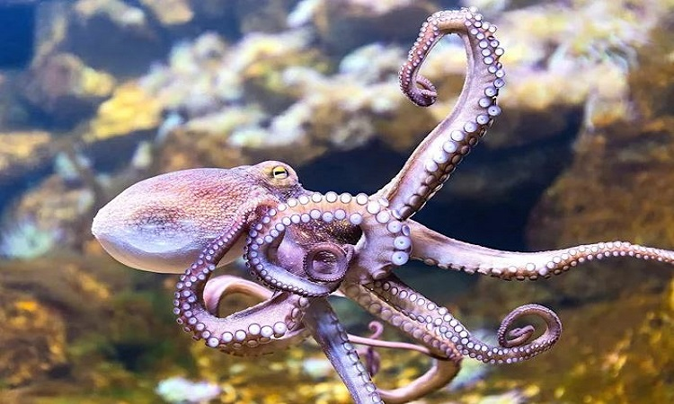

Bạch tuộc thuộc họ Cephalopoda, cùng với mực và sò, và là nhóm động vật có não nhỏ nhất trong nhóm động vật có xương sống. Tuy vậy, bạch tuộc lại được biết đến với khả năng thông minh và khéo léo đáng kinh ngạc. Chúng có thể giải quyết các vấn đề phức tạp, như mở nắp chai, đi qua các chướng ngại vật, và thậm chí sử dụng công cụ để săn mồi.
 Một trong những đặc điểm nổi bật của bạch tuộc là hệ thần kinh phức tạp và mắt rất phát triển. Chúng có đôi mắt lớn và tinh vi, giúp chúng nhìn rõ trong môi trường ánh sáng yếu dưới đáy biển. Ngoài ra, bạch tuộc cũng có khả năng thay đổi màu sắc và hoạt động như một kỹ thuật giấu mình, giúp chúng tránh kẻ săn mồi và tăng khả năng săn bắt.Bạch tuộc có cấu trúc cơ thể linh hoạt với 8 cánh tay, mỗi cánh tay có hàng tá chiếc gai nhỏ gắn liền, giúp chúng bám chắc vào các bề mặt và cũng là công cụ tấn công hiệu quả. Chúng cũng có khả năng tự cắt cánh tay để trốn thoát khỏi kẻ săn mồi hoặc nguy hiểm, và sau đó có thể phục hồi lại cánh tay mới.
Bạch tuộc là một loài săn mồi tài ba. Chúng thường ăn các loại động vật nhỏ như cá, giun, con trai và các loài giun đất. Để săn mồi, bạch tuộc sử dụng chiến thuật tấn công nhanh chóng và tinh vi. Chúng có thể sử dụng cánh tay để bao vây mồi và phun một loại mực đặc biệt để làm mờ tầm nhìn của mồi và kẻ săn mồi.Bạch tuộc là loài động vật có sự đa dạng về kích thước và màu sắc. Kích thước của bạch tuộc có thể dao động từ chỉ vài centimet đến hơn 5 mét, với trọng lượng lên đến hàng chục kg. Màu sắc của chúng cũng rất đa dạng, từ màu nâu, xanh dương, đỏ tới cam, và có thể thay đổi để tương hợp với môi trường xung quanh.